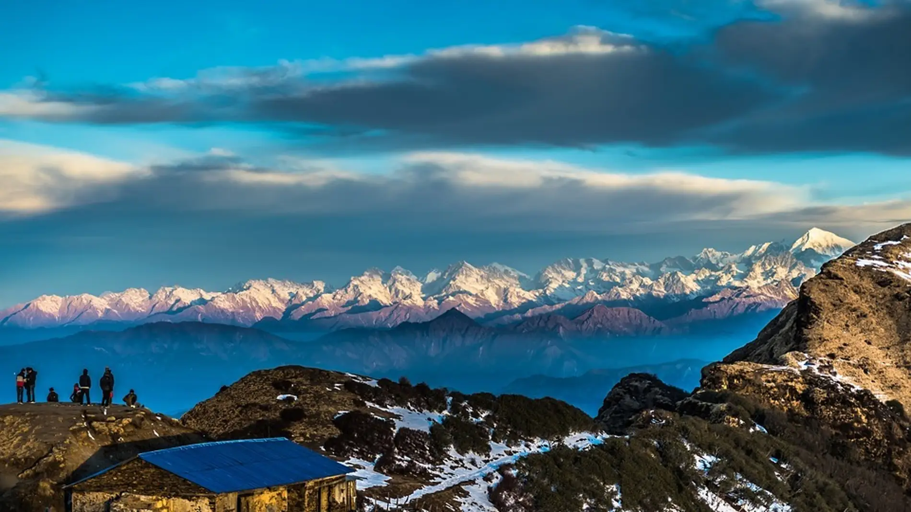
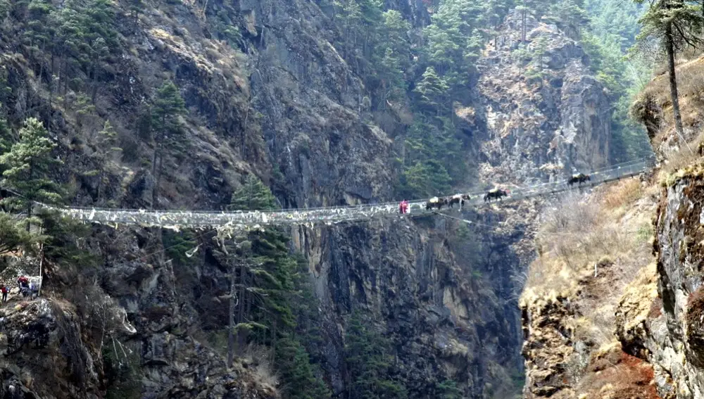
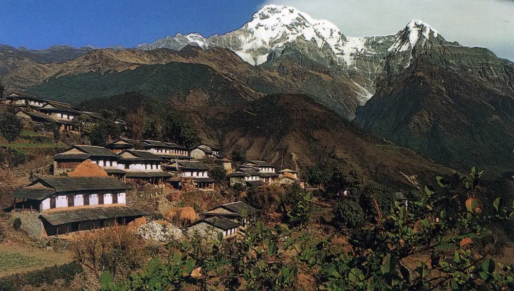

¿Por qué todos debemos viajar a Nepal al menos una vez en la vida?
Seguro que te han recomendado en más de una ocasión visitar Nepal. Pero, ¿por qué tanta insistencia? Es sencillo; porque todo el mundo debería ir una vez en la vida.
Es difícil encontrar algo en lo que la gran mayoría del planeta coincida, pero lo hemos hecho. Prácticamente todo el mundo tiene claro que existe un lugar que todos debemos visitar al menos una vez en la vida, un lugar que deja huella y que cambia por completo a todo aquel que se sumerge en él. Hablamos, por supuesto, de Nepal.
Con toda seguridad, más de una vez te habrán recomendado viajar allí, asegurando que va a ser el viaje de tu vida y que va a costarte enormemente regresar. Dos razones que ya nos impulsan a lanzarnos a ese viaje, pero que en realidad se nos pueden quedar algo vacías, puede que no nos digan demasiado. Si ese es tu caso, no te preocupes, vamos a convencerte con argumentos más tangibles de que todos los que te han recomendado viajar a Nepal estaban en lo cierto.
Otra de las razones que no podemos dejarnos en el tintero está directamente relacionada con nosotros mismos. Estamos acostumbrados a no tener un respiro, ni siquiera en vacaciones, y en ocasiones nos damos cuenta de que no nos conocemos, de que no sabemos quiénes somos, qué es lo que verdaderamente queremos y qué es lo que nos importa. Estas tres cuestiones y otras muchas más podrán encontrar su respuesta en la paz de Nepal. Es el lugar perfecto para meditar, para conectar con nuestro planeta, con las personas de nuestro alrededor y con nosotros mismos. Dicen que viajar allí cambia por completo a las personas, y uno de los motivos por los que lo hace es porque nos permite conocernos, nos permite hablar con nuestro interior, bucear en él.
